CSAPP 13-linking
链接概述
- 源程序的编译
gcc -Og -o prog main.c swap.c可以分为以下四个阶段：- Pre-Processor预处理(cpp)
cpp -o main.i main.corgcc -E -o main.i main.c，-E为限制gcc只做预处理工作
- Compiler编译(ccl)
cc -S -o main.s main.iorgcc -S -o main.s main.i，-S表示只做编译；
- Assmebler汇编(as)
as -o main.o main.s，这步得到的是可重定位文件；
- Linker链接(ld)
ld -static -o prog main.o sum.o以及其他库文件，-static表示静态编译
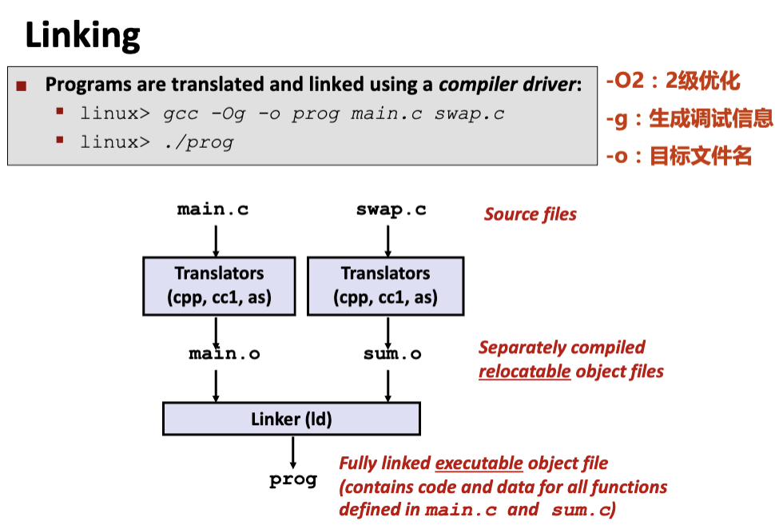
- Pre-Processor预处理(cpp)
- 链接动作在编译、加载和运行时都可以被执行
1. 静态链接器Linker任务：
- Symbol resolution 符号解析（符号绑定）：
- 将引用符号和定义符号建立关联；
- 定义的实质是被分配了存储空间，为函数名制定了其代码所在区，为变量名制定了其所占的静态数据去；
- 掌握如何区分定义符号和应用符号；
- Relocation 重定位：
- 合并相同的节；例如，所有.text节合并作为可执行文件中的.text节；
- 对定义符号进行重定位，确定地址；例如，为函数确定首地址，进而确定每条指令的地址，为变量确定首地址；
- 对引用符号进行红定位，确定地址；需要用到在.rel_data和.rel_text节中保存的重定位信息；
2. 符号解析：
- Global symbol：自定他用，全局可见，跨模块使用，在链接时进行符号解析：
- External symbol：他定自用，和Glbal Symbol相对，链接时在其他模块中查找；
- Local
symbol：自定自用，局部符号通常由
static修饰，限制其作用域。 - 注意区分Local non-static varibles、Local static varibles：
static int x = 15;
int f() {
static int x = 17;
return x++;
}
int g() {
static int x = 19;
return x += 14;
}
int h() {
return x += 27;
}- 注意区分上面每个\(x\)，函数\(f\)和\(g\)中的都是作用域在函数内的局部静态变量
- 最外面的\(x\)，即函数\(h\)引用的是文件范围内的静态变量；
- 全局符号的符号解析：如果存在多个定义相同名字的全局变量：
- 强符号：函数以及初始化的全局变量；
- 弱符号：未初始化的全局变量；
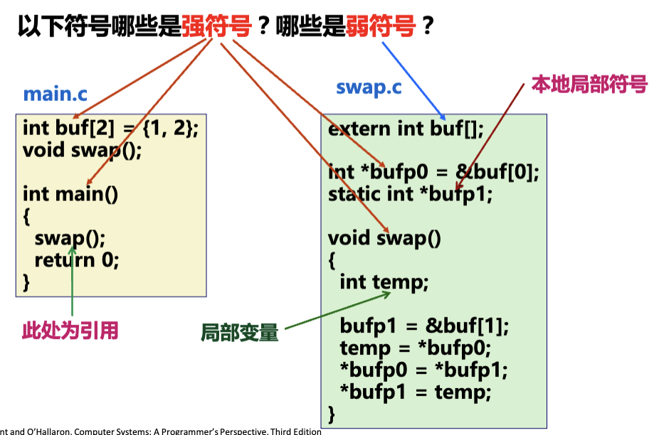
- 规则：
- 不许有多个同名的强符号，否则Linker error；
- 如果有一个同名的强符号和多个弱符号，则取强；
- 如果有多个同名的弱符号，随机选择；
- 注意，链接器不做类型检查，所以会发生如下问题：
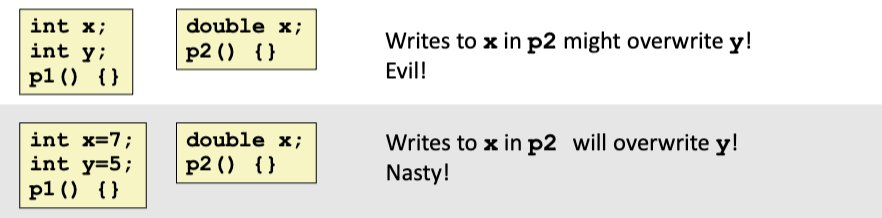
- 引用double类型的x变量（8bytes）时可能会覆盖y的空间；
3. 目标文件Object Files
- 可重定位目标文件(.o file)
- 可执行目标文件(a.out file)：前者经过链接得到的产物，可以直接复制到内存中并执行；
- 共享目标文件(.so file)：特殊的可重定位目标文件，可以在程序加载或运行时被动态地加载进内存并链接；
4. ELF可重定位目标文件（可执行可链接模式）：
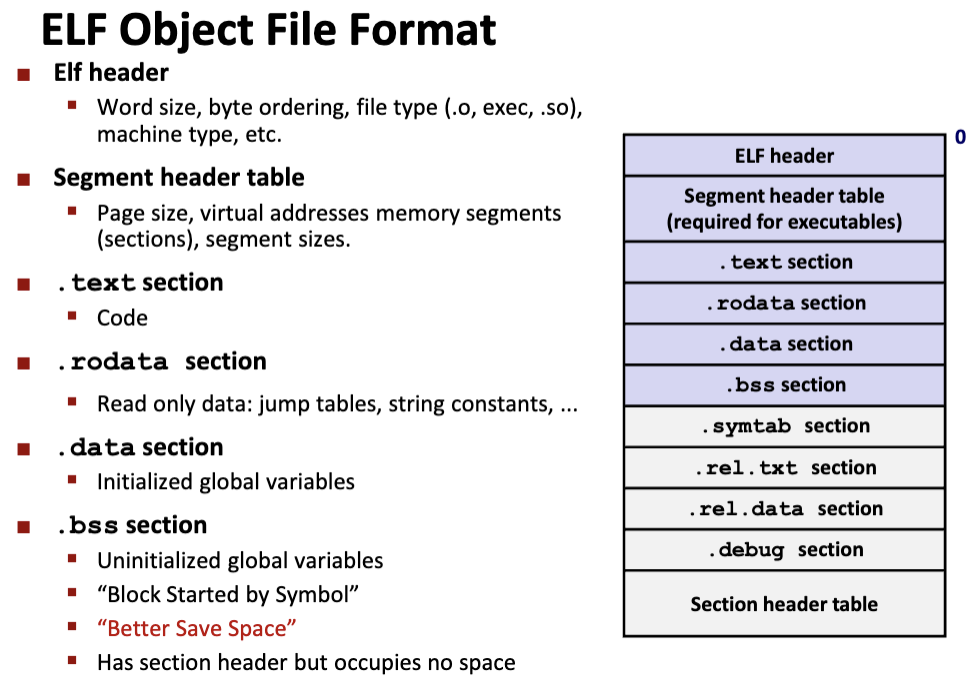
* ELF header：16字节的序列，包括字的大小等信息；
* .text section：代码段；
* .rodata section：只读数据，比如switch的跳转表、printf的格式字符串；
* .data：初始化的全局变量和静态C变量；
* .bss：未初始化以及初始化为0的全局变量和静态C变量；
* 实际上不占用任何存储空间，仅是一个占位符；
* Better Save Space；
* 运行时自动分配这些变量的初始值为0；
* 有些题目比较恶心，会区分.bss和COMMOM：
* .bss存放未被初始化的静态变量以及初始化为0的全局或静态变量；
* COMMOM存放未被初始化的全局变量；
* .symtab：符号表；
* .rel.txt，.rel.data，占位符，即引用别的模块中定义的全局变量和函数的指令的占位符，就是下图箭头所指的；
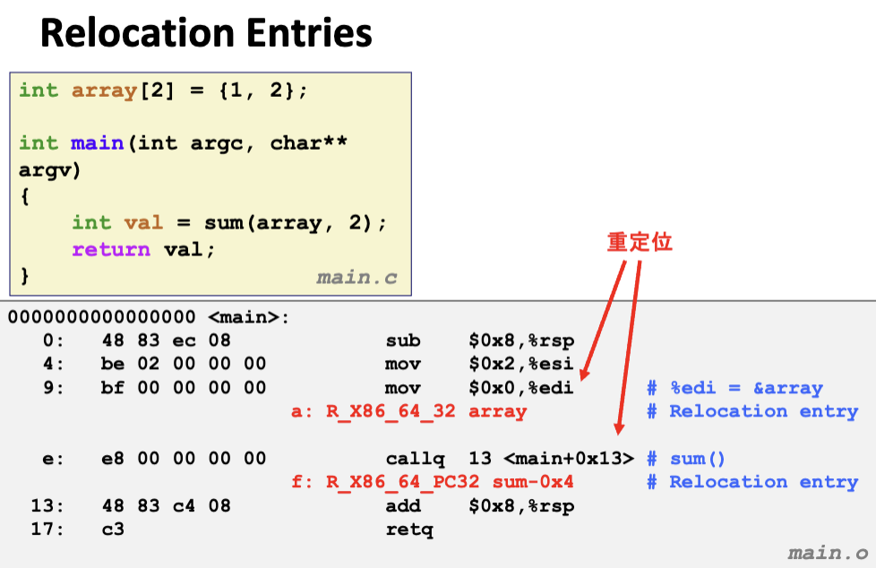
* .debug：调试信息(需要加上
gcc -g)；* Section header table：每个节的大小信息；
5.可执行文件的目标文件格式
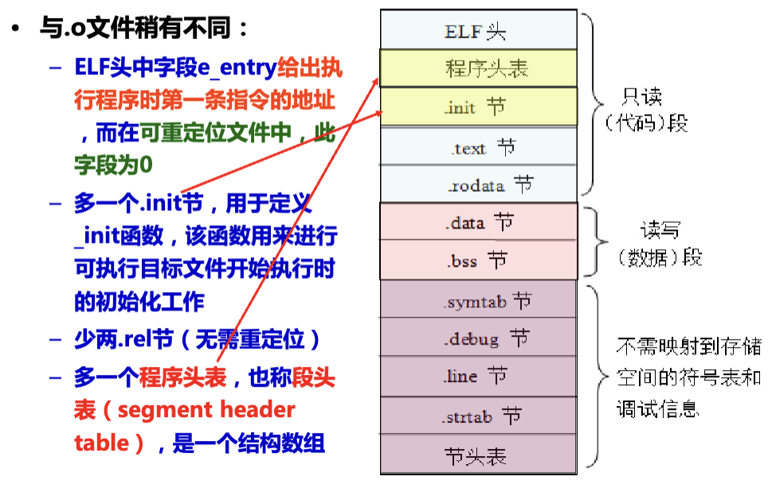
* 多了一个程序头表：包含第一条指令的地址；
* 少了.rel.txt和.rel.data，因为已经链接完了，无需再重定位；
6. 重定位
- 重定位信息：
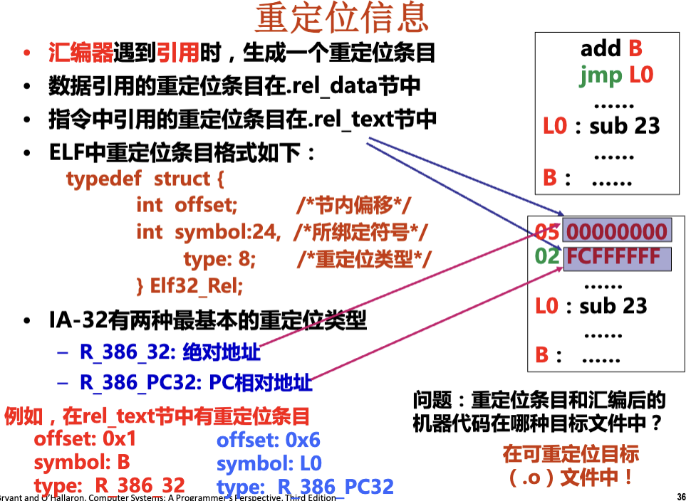
R_386_PC32重定位方式
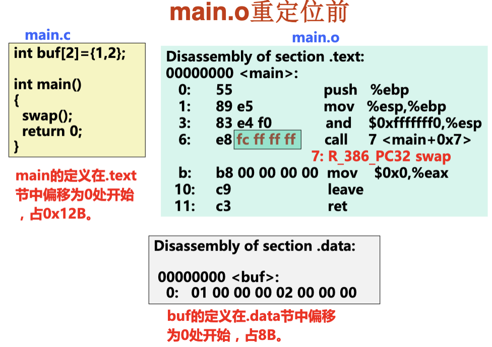
* 根据重定位前的.o文件，能得到哪些信息？
* main在.text节中偏移为0处开始，占0x12bytes；
*
e8 fc ff ff ff中，e8是call的机器码，后面应该存放swap函数的地址，但目前未重定位，所以没有意义，是占位符；* 下一行的
7: R_386_PC32 swap也是占位符，用于重定位，7表示需要在地址7(6
+
1，call的机器码占一个字节)处进行重定位，R_386_PC32表示需要计算的是PC相对地址；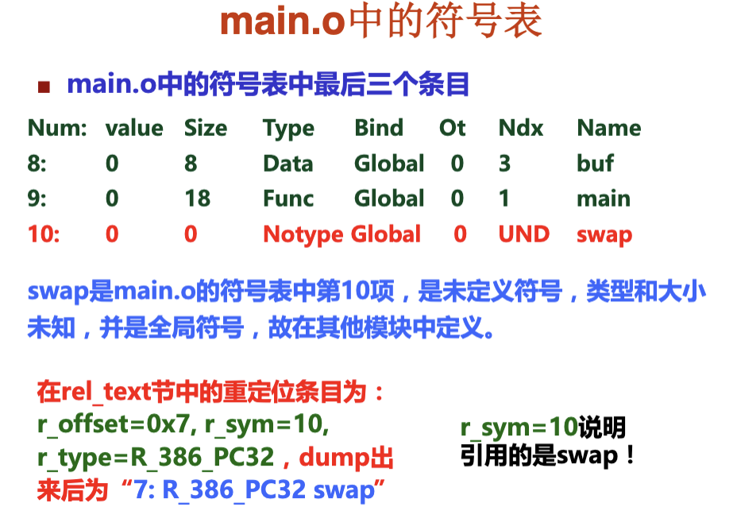
* 根据以上信息，问题是：
* main函数从
0x8048380开始，占0x12bytes，swap紧跟main后，所以其起始地址为0x8048380 + 0x12 = 0x804892B，由于其机器代码首地址需要按4字节边界对齐，所以应该是0x8048394；* 重定位后，call指令的机器代码应该是什么？
* 由于采用R_386_PC32相对地址法，转移目标地址 = PC + 偏移地址(重定位值)；
* 在执行call时，PC指向call指令的下一条地址，即
0x8048380 + 0x7 = 0x8048387；* 但是，由于一开始有一个占位的初始偏移值
fc ff ff ff即-4，链接器在进行重定位之前，会先减掉这个临时的偏移量，所以，正确的PC地址应该是0x8048387 - (-4) = 0x804838b；* 事实上，这个PC地址就是call指令的下一条语句的地址；
* 重定位值 = 转移目标地址 - PC =
0x8048394 - 0x804838b = 0x9；* 然后链接器将call指令的机器代码修正为
e8 09 00 00 00；（小端法）
R_386_32的重定位方式
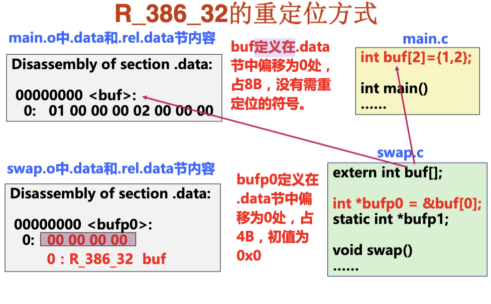
静态库链接Static Libraries
- 将所有相关的目标文件模块打包成一个单独的文件，称为静态库；
- 使链接器构造可执行文件时，只要复制静态库里被程序引用的目标模块；
- 相比于链接整个模块，减少了可执行文件在磁盘和内存中的大小；
# create static libraries
unix> ar rs libc.a \ atoi.o printf.o ... random.o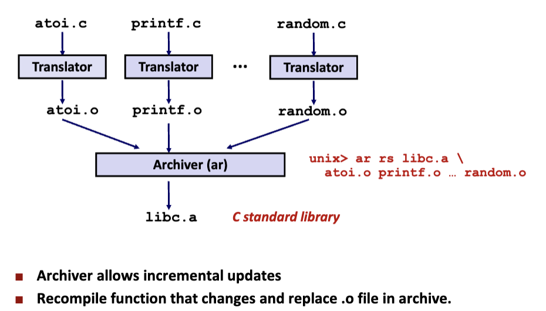
# 与静态库链接
unix> gcc -static -o prog2r \ main2.o -L. -lvector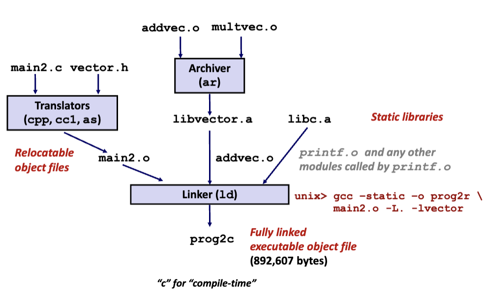
* 自定义创建静态库文件（ar工具）
gcc -c myproc1.c myproc2.c
ar rcs mylib.a myproc1.o myproc2.o
gcc -c main.c
gcc -static -o myproc main.o ./mylib.a # 标准的静态库无需显示给出- 在进行符号解析到过程中，按从左往右的顺序进行链接，并将符号分为三个集合：
- E：合并以组成可执行文件的所有目标文件集合；
- U：当前所有未解析的引用符号；
- D：当前所有定义的符号的集合，来更新U和E；
- 符号解析的完整过程如下：
- 扫描到main.o并加入E；
- 把main.o中未解析的引用myfunc加入U，把main加入D；
- 扫描到静态库文件mylib.a，将U中的符号与mylib.a中所有目标模块依次匹配，将myfunc从U中删除移到D，将myproc1.o加入E；
- 此时myproc1.o中发现未定义printf符号，将其加入到U；
- 不断扫描静态库文件，直至U、D不变；
- 扫描默认的库文件libc.a时，找到printf.o定义，将printf.o加入到E，并将printf从U移动到D，此时U一定是空的，否则就报错了；
- 由于未引用myproc2.o的内容，它并不在E中，被丢弃；
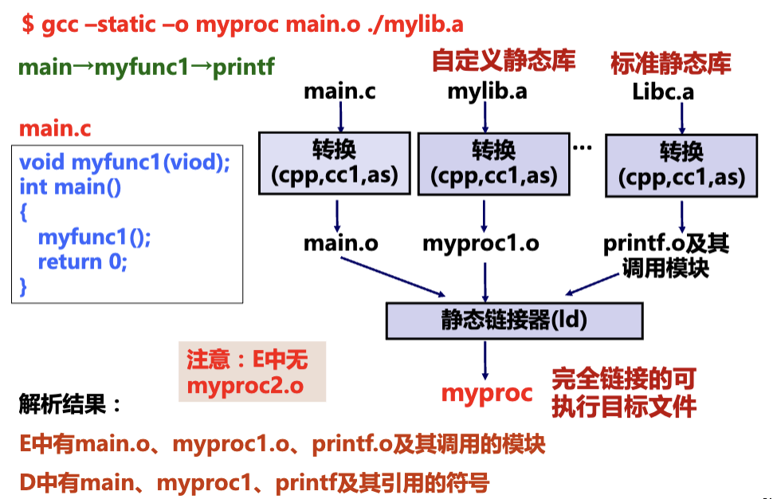
- 但是静态库链接的顺序扫描会导致一个问题：
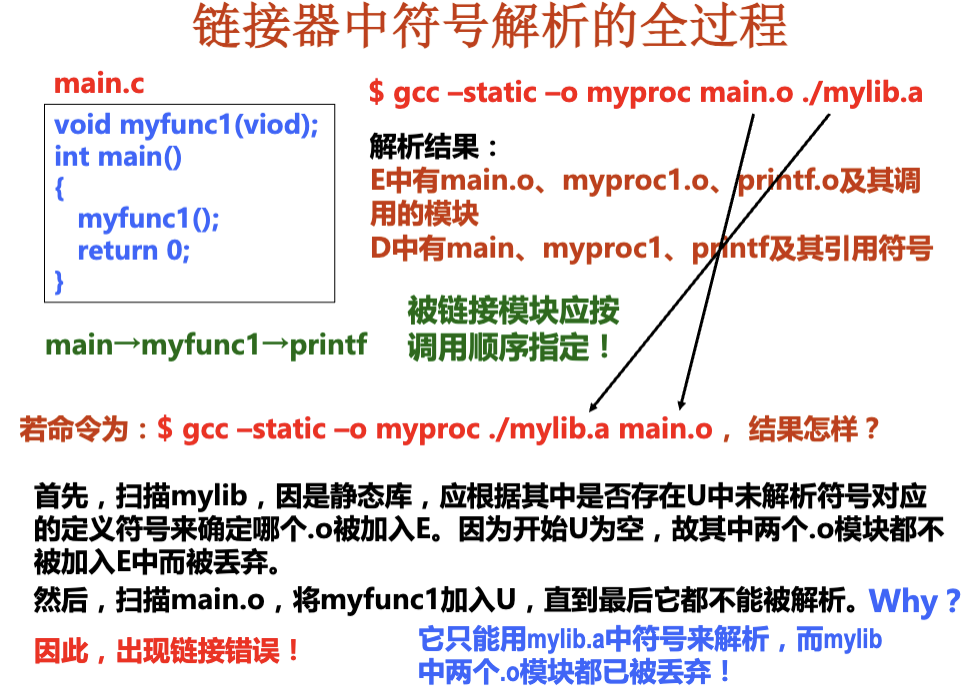
- 所以好的做法是将静态库放在命令行最后；
- 如果静态库之间并不相互独立，静态库需要重复出现；
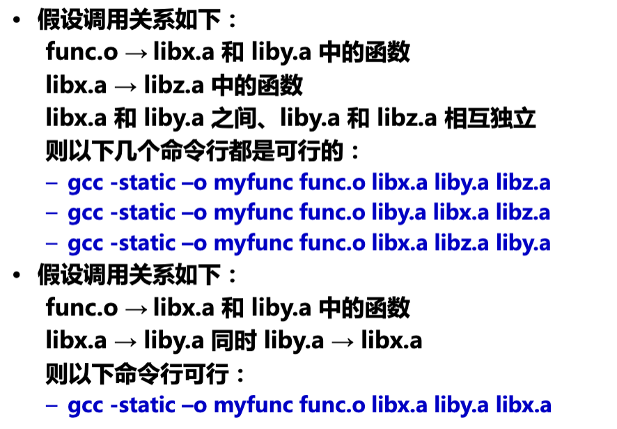
- 静态库的缺陷：
- 主存资源浪费；
- 磁盘空间浪费；
- 更新困难，使用不便；
动态链接的共享库Shared Libraries
- 共享库是一个目标文件（Linux：.so文件；Windows：.dll文件）；
- 从程序中分离出来，磁盘和内存中都只有一个备份；
- 可以在程序运行或加载时，加载到内存的任意位置，并和一个内存中的程序链接起来，称为动态链接；
ldd prog可以打印出可执行文件需要的动态链接库；- 自定义创建动态链接库：（
-fpic是生成位置无关的共享库代码文件）
unix> gcc -Og -c test1.c test2.c
unix> gcc -shared -fpic -o test.so \ test1.o test2.o
unix> gcc -c main.c
unix> gcc -o test main.o ./test.so- 动态链接库在加载时的链接过程：
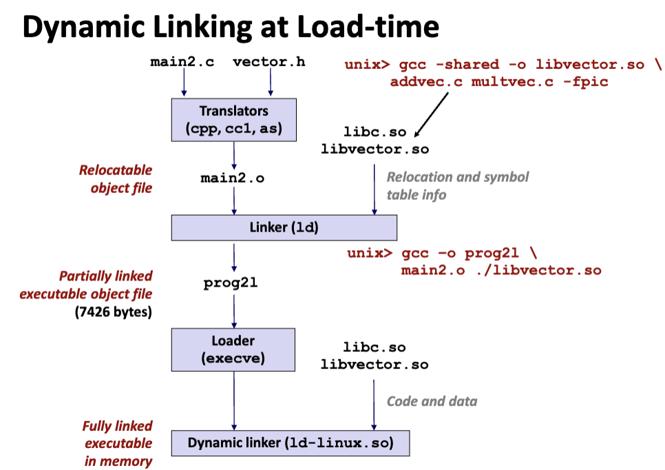
- 在静态链接器ld链接的过程中，生成重定位和符号表信息；
- 加载可执行程序时，加载器发现在程序表中的 .interp 段，其中包含了动态链接器路径名 ld-linux.so，因而加载器根据指定路径加载并启动动态链接器运行；
- 完成重定位后，将控制权交给可执行文件，开始执行程序；
- 动态链接库在运行时的链接过程：
#include <dlfcn.h>
/* Dynamically load the shared library that contains addvec() */
handle = dlopen("./libvector.so", RTLD_LAZY);
/* Get a pointer to the addvec() function we just loaded */
addvec = dlsym(handle, "addvec");
/* Now we can call addvec() just like any other function */
addvec(x, y, z, 2);
/* Unload the shared library */
dlclose(handle);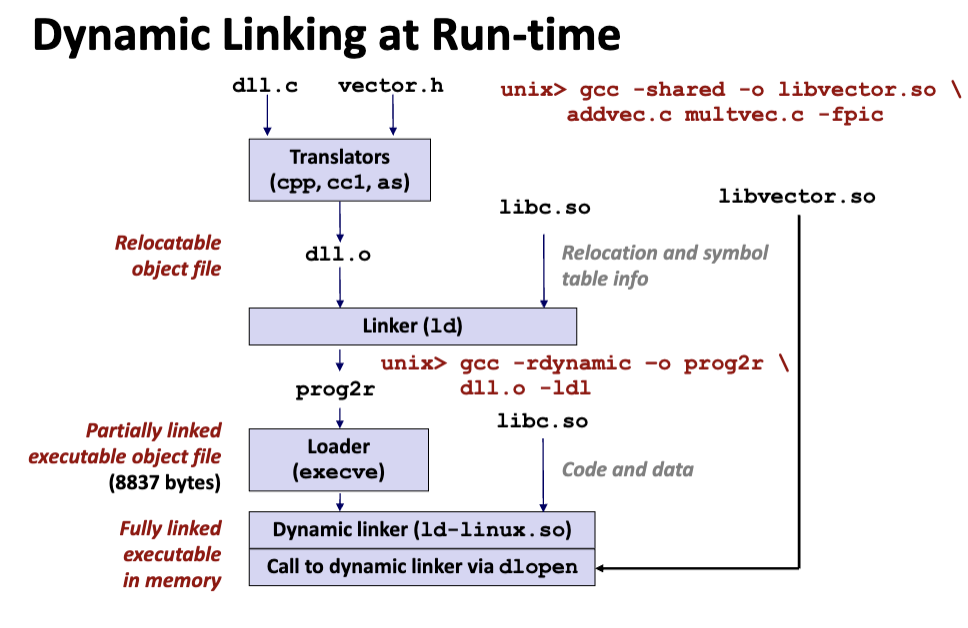
- 上述过程也被称为Lazy Binding (延迟绑定)，它将函数地址的绑定推迟到函数第一次被调用时，而不是在程序加载到内存时立即完成所有函数地址的绑定；
- 延迟绑定依赖两种关键的数据结构：GOT（全局偏移表） 和 PLT（过程链接表）；
- GOT：
- 它是一个包含地址的表，存放在程序的数据段中（.data 或 .bss）。
- 每个引用的全局对象（包括全局变量和动态链接函数）在 GOT 中占据一个条目（8 字节）。
- 每个目标模块（目标文件或共享库）都会有自己的独立 GOT。
- 在程序加载时，动态链接器计算全局变量或函数的绝对地址。将每个 GOT 条目更新为对应全局对象的绝对地址。
- PLT：
- PLT 是一段可执行代码，用来间接调用动态链接的函数。
- 每个动态链接的函数在 PLT 中都有一个对应的条目，每个条目大小为 16 字节。
- 在程序中，所有对动态函数的调用都会先跳转到对应的 PLT 条目，而不是直接调用函数地址。
- 每个动态函数在 GOT 中都有一个对应的条目，初始状态下，该条目指向动态链接器的解析代码。
- 当动态链接器解析了目标函数地址后，会更新对应的 GOT 条目为函数的实际地址。
- 第一次调用函数：
- PLT 条目先访问 GOT，发现 GOT 中的地址是动态链接器的入口。
- 动态链接器解析函数的实际地址，并更新 GOT 条目。
- 后续调用函数：
- PLT 条目直接跳转到 GOT 条目中存储的函数地址，避免重复解析。
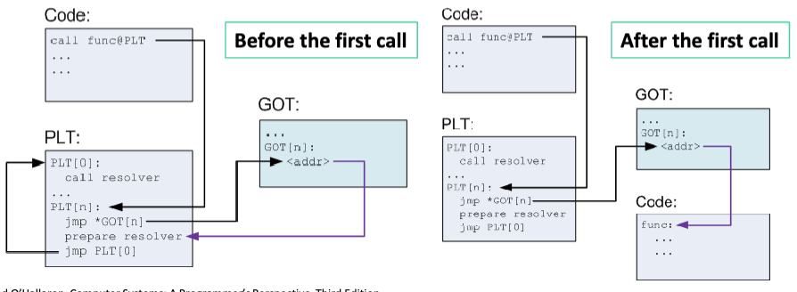
- PLT 条目直接跳转到 GOT 条目中存储的函数地址，避免重复解析。
本博客所有文章除特别声明外，均采用 CC BY-NC-SA 4.0 许可协议。转载请注明来源 YokumiのBlog！